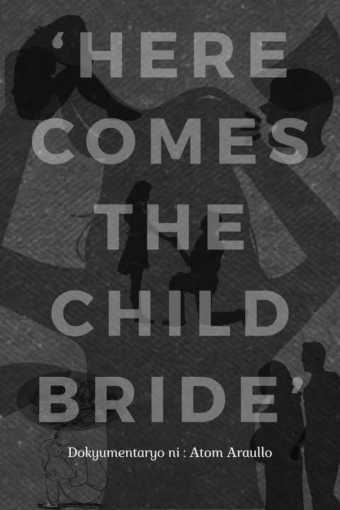

- 
Ang "Here Comes the Child Bride" ay isang dokumentaryo na tumatalakay sa isyu ng maagang pagpapakasal ng mga batang babae. Ipinapakita nito kung paano ang mga batang ito, na dapat ay nag-aaral at namumuhay ng malaya, ay pinipilit mag-asawa dahil sa mga tradisyon o desisyon ng kanilang pamilya.
Ang dokumentaryong ito ay nagpapakita ng mga batang babae na ikinasal sa murang edad. Dahil dito, nawawala ang kanilang mga pangarap at pagkakataon sa buhay. Hindi nila alam ang mga panganib ng maagang pagpapakasal, tulad ng mga problemang pangkalusugan at ang pagkawala ng edukasyon.
Ang tema ng dokumentaryo ay kalayaan at karapatan ng bawat batang babae. Sa kabila ng mga tradisyon, ang mga batang babae ay may karapatang magdesisyon para sa kanilang sarili. Ngunit dahil sa mahigpit na kultura at paniniwala, hindi nila nakakamtan ang mga karapatang ito. Dito ipinapakita ang epekto ng child marriage sa kanilang kinabukasan.
Ang dokumentaryong ito ay mahalaga dahil pinapalaganap nito ang awareness at dahil binibigyan nito ng pansin ang isyu ng child marriage, isang problema na hindi pa natutugunan ng husto. Marami sa mga batang babae na nakakaranas nito ay walang kaalaman tungkol sa kanilang mga karapatan, kaya't sila ay napipilitang sumunod sa mga tradisyon na nakasasama sa kanilang buhay.
May mga hakbang na ginagawa upang itigil ang child marriage. Ang edukasyon at pagpapalaganap ng kaalaman tungkol dito ay isang malaking tulong. May mga batang babae na nagsisilibing halimbawa na kahit sa gitna ng pagsubok, may pagkakataon pa ring magbago ang kanilang buhay. Sa kabuuan, Ang "Here Comes the Child Bride" ay isang paalala na kailangan nating magtulungan upang tapusin ang child marriage. Hindi ito tama, at may mga paraan upang matulungan ang mga batang babae na magkaroon ng mas magandang buhay. Kung lahat tayo ay magsusumikap, maaari nating mabigyan sila ng pagkakataong mangarap at magtagumpay.